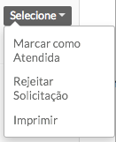
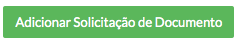
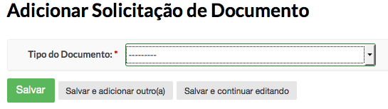
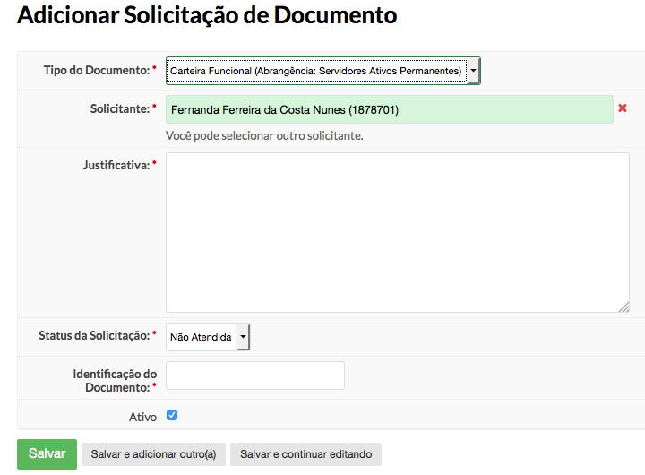
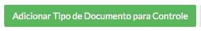
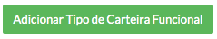
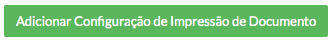

Conteúdo
O módulo de solicitação de documentos foi desenvolvido para substituir o controle de documento, que era usado apenas para registrar as impressões dos documentos. Este novos módulo contempla também a solicitação, dando um maior controle nos registros de emissão dos documentos.
Acesse Gestão de Pessoas > Solicitação de Documento A lista de solicitações é diferente para cada tipo de perfil de usuário:
Usuário comum pode visualizar apenas a sua solicitação, tendo disponível o histórico do andamento de sua solicitação.
Usuários com o perfil de RH, a principio, visualiza todas as solicitações de seu campus ou Reitoria. Caso a configuração de impressão seja alterada, poderá visualizar mais campi.
Super usuário consegue ver todas as solicitações.
Usuários com o perfil RH terão disponíveis as seguintes ações: 
Ao selecionar a ação “Marcar como Atendida”, a situação da solicitação ficará como “atendida”. O sistema entenderá que o documento já foi impresso.
Ao selecionar a ação “Rejeitar Solicitação”, irá abrir uma janela para que o usuário justifique a rejeição. Esta informação ficará disponível para o usuário solicitante.
Ao selecionar a ação “Imprimir”, será gerado um layout do tipo do documento solicitado para impressão.
Aviso
Lembrando que carteira funcional pode ter mais de um tipo cadastrado. Será impresso o layout da versão ativa no sistema.
Clique no botão “Adicionar Solicitação de Documento” para acessar o formulário de solicitação.

Será acessado um formulário para escolha de qual o tipo de documento será solicitado.

Ao selecionar o tipo de documento, será redirecionado para o formulário específico do documento escolhido. Ex.: Carteira Funcional

Nota
O perfil de RH pode solicitar um documento para uma pessoa, bastando alterar o campo “Solicitante”. Perfis de usuário comuns não terá acesso a determinados campos do formulário, como, no exemplo, os campos: Situação da Solicitação, Identificação do Documento e Ativo.
Para o bom funcionamento deste módulo, é necessário o pré-cadastro de algumas informações: Tipo de Documento, Tipo de Carteira Funcional (quando necessário) e Configuração de Impressão de Documentos.
Tipo de Documento é um módulo de suporte ao módulo de Solicitação de Documentos. Sua função é basicamente cadastrar quais os tipos de documentos poderão ser solicitados.
Acesse Gestão de Pessoas > Cadastros > Tipos de Documentos
Clique no botão “Adicionar Tipo de Documento para Controle” localizado no canto superior direito 
Preencha os campos obrigatórios do formulário e clique em “Salvar”
Aviso
Lembrando que toda a lógica da solicitação ainda precisará ser implementada pela equipe de desenvolvimento.
Tipo de carteira funcional é um módulo auxiliar ao módulo de Solicitação de Documento. Este módulo é responsável por cadastrar e manter todos os tipos já usados de carteira funcional, deixando também disponível o modelo atual para impressão.
Acesse Gestão de Pessoas > Cadastros > Tipos de Carteira Funcional
Clique no botão “Adicionar Tipo de Carteira Funcional” localizado no canto superior direito 
Preencha os campos obrigatórios do formulário e clique em “Salvar”
Aviso
O campo template é usando dentro do código do suap para identificar qual template de impressão será usado. Logo, a cada novo cadastro será necessário desenvolver a lógica de impressão.
Este módulo é responsável por configurar as responsabilidades de impressão dos documentos para o instituto. Ele é importante para a correta visualização das solicitações pelos campi responsáveis.
Acesse Gestão de Pessoas > Cadastros > Configuração de Impressão de Documento
Clique no botão “Adicionar Configuração de Impressão de Documentos” localizado no canto superior direito 
O campo “Campus” é o local responsável pelas impressões, ou seja, é importante selecionar apenas os campi que tem impressora para imprimir os documentos;
O campo “Relação de Impressão” é onde será definido quais os campi serão abarcados pelo campus responsável;
O campo “Tipos de Documentos” mostra todos os Tipos de Documentos cadastrados que o sistema tem suporte.
Neste exemplo, a Reitoria (RE) é responsável pelas impressões das campi Mossoró (MO) e João Câmara (JC) e responsável pelas suas próprias impressões. Também é possível perceber que a Reitoria poderá imprimir carteiras funcionais e crachás.